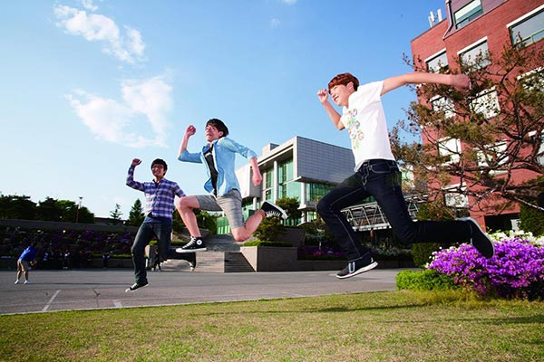

Vì sao nên chọn đi du học Hàn sau khi tốt nghiệp THPT?
Ngày nay độ tuổi du học của các bạn trẻ ở Việt Nam đang ngày một “trẻ hóa”. Đây là xu hướng vô cùng đúng đắn và tuyệt vời. Cũng như vậy, độ tuổi du học Hàn Quốc luôn nằm trong mức từ 18 đến 24 tuổi. Đa phần trong số đó các bạn lựa chọn du học Hàn Quốc ngay sau khi tốt nghiệp phổ thông.
Trước đây, khá nhiều bạn lựa chọn con đường du học sau khi đã hoàn thành xong chương trình đại học của mình. Nhưng thực tế, cách làm này khiến bạn tốn thời gian và không hiệu quả. Đơn cử như khi bạn du học Hàn Quốc, bạn sẽ mất khoảng 1 đến 2 năm để học tiếng Hàn và sau đó là từ 2 – 4 năm để hoàn thành chương trình đào tạo nghề hay cao đẳng, đại học; tổng thiệt hại lên tới 3 – 6 năm nữa. Như vậy khi hoàn thành xong tất cả các chương trình, cơ hội của bạn sẽ giảm sút vì lúc này cũngđã gần 30 tuổi.
Chính vì vậy, việc các bạn học sinh lựa chọn du học Hàn Quốc ngay sau khi tốt nghiệp phổ thông là hoàn toàn đúng đắn. Với khoản thời gian như trên, các bạn sẽ ra trường ở độ tuổi sung súc và đầy nhiệt huyết nhất, cùng như cơ hội phát triển cho bạn sẽ rộng mở hơn.

I. Lý do nên chọn du học Hàn Quốc từ sớm
1. Nền giáo dục chất lượng
Các trường đại học Hàn Quốc đang trở nên ngày càng cạnh tranh khi nói đến tuyển sinh nước ngoài trong nỗ lực để đáp ứng chuẩn toàn cầu. Việc thu hút nhiều du học sinh sẽ thể hiện được quy mô toàn cầu và hình ảnh của trường đối với các trường đại học khác. Bên cạnh đó, sinh viên nước ngoài còn là nguồn tài chính tốt, dồi dào và không giới hạn của các trường.
Hàn quốc luôn ưu tiên phát triển giáo dục hàng đầu, nền giáo dục của họ rất phát triển và được quan tâm. Từ lâu, Hàn Quốc đã coi giáo dục là mục đích lớn nhất cho việc đào tạo nhân tài. Chất lượng bằng cấp của Hàn Quốc được đánh giá cao và công nhận rộng rãi trên toàn thế giới. Hầu hết sinh viên sang Hàn Quốc du học đều cảm thấy hài lòng với nền giáo dục của quốc gia này. Có nhiều ngành nghề cho sinh viên lựa chọn ở các hệ đào tạo từ cao đẳng, cử nhân đến thạc sỹ, tiến sỹ.
Việc quan tâm , coi trọng về giáo dục đã đưa Hàn Quốc lên đứng ở vị trí thứ 2 trong bảng xếp hạng các nước có nền giáo dục tốt nhất thế giới (theo đánh giá của tổ chức giáo dục quốc tế Pearson năm 2012). Bảng xếp hạng dựa trên kết quả của hàng loạt các cuộc thi quốc tế và nhiều thước đo nền giáo dục…Theo sau hai siêu cường quốc tế về giáo dục là Phần Lan và Hàn Quốc là hàng loạt các nước, lãnh thổ thuộc khu vực Châu Á như Hồng Kông, Nhật Bản và Singapore. Tiếp theo là Anh – nước được xếp trên Hà Lan, New Zealand, Canada và Ireland. Mỹ, Đức và Pháp lần lượt đứng ở vị trí thứ 1, 12 và 13 trong bảng xếp hạng này.
Ông Michael Barber – Cố vẫn trưởng công ty giáo dục Pearson nói rằng những nước thành công trong giáo dục thường có lực lượng giáo viên chất lượng và một nền “văn hóa: giáo dục. Giáo viên ở những nước này thường có 2 thứ cao: lương cao và dạy học chất lượng cao. Theo bảng xếp hạng trên thì hai yếu tố này thường đi đôi với nhau. Nhìn vào bảng xếp hạng những nền giáo dục thành công, chúng ta dễ dàng nhận thấy, không phải những quốc gia giàu nhất mới là những quốc gia có nền giáo dục tốt nhất.
Không phải trường đại học nào cũng giống nhau
Ở Hàn các trường đều có một thế mạnh đào tạo khác nhau, bạn có thể lựa chọn những ngôi trường đào tạo thế mạnh về ngành mà bạn đã lựa chọn. Tuy nhiên, ngay cả sinh viên Hàn Quốc ai cũng đều hướng đến top 3 trường đại học hàng đầu S.K.Y đó là: đại học quốc gia Seoul. Đại học Hàn Quốc và đại học Yonsei. Dù 1 trong 3 trường chưa phải là trường đào tạo tốt nhất về ngành học mong muốn của bạn, dù bạn không phải là người có thành tích học tập tốt nhất nhưng nếu bạn có tấm bằng đại học từ 3 ngôi trường này thì cơ hội nghề nghiệp về cho bạn, con đường dẫn bạn đến thành công trong cuộc sống ở Hàn Quốc sẽ dễ dàng hơn rất nhiều.
Theo số liệu nghiên cứu của Tổ chức Công nghệ viễn thông quốc tế, Hàn Quốc là quốc gia xếp hạng đầu tiên trong tổng số 152 quốc gia phát triển tại ICT. Những ngành phát triển mạnh như: chế tạo máy, công nghiệp hóa chất, công nghệ đóng tàu và xe ôtô,... Hàn Quốc luôn nằm ở top đầu. Với hơn 20 triệu hộ gia đình có mạng truy cập internet và hầu hết các gia đình đều sử dụng khoa học kỹ thuật. Chính vì vậy khi du học tại Hàn Quốc, bạn sẽ có cơ hội tiếp cận với nền khoa học kỹ thuật tiên tiến nhất tại đây.
Hàn Quốc luôn ưu tiên phát triển giáo dục hàng đầu, nên nền giáo dục của họ rất phát triển và được quan tâm đầu tư ở mức cao nhất. Chất lượng bằng cấp do Hàn Quốc chứng nhận được đánh giá cao và công nhận rộng rãi trên toàn thế giới. Sinh viên đã sang Hàn Quốc du học đều cảm thấy hài lòng với nền giáo dục của quốc gia này. Có nhiều ngành nghề cho sinh viên lựa chọn thuộc các hệ đào tạo từ bậc cao đẳng đến đại học và trên đại học (thạc sĩ, tiến sĩ).
2. Đa dạng về văn hóa và cuộc sống năng động
Là một quốc gia với hơn 5000 năm lịch sử, Hàn Quốc là một trong những quốc gia duy nhất phát triển theo hướng di sản văn hóa kết hợp với truyền thống. Làn sóng văn hóa Hàn Quốc ngày càng tác động mạnh mẽ vào nhiều nước trên thế giới, trong đó có Việt Nam. Đặc biệt trong lĩnh vực giải trí và thời trang, Hàn Quốc đang dần chinh phục thị hiếu của nhiều người. Những bộ phim Hàn được đầu tư kinh phí lớn, những nhóm nhạc và nam/nữ ca sĩ Hàn Quốc làm điên đảo người hâm mộ khắp nơi.
Chương trình học tại Hàn Quốc tập trung phát triển giá trị văn hóa của Châu Á, nơi mà những giá trị truyền thống và hiện đại có kết hợp hài hòa. Học tập tại đây, sinh viên vừa được phát triển kiến thức chuyên môn, vừa tiếp nhận được đa dạng những văn hóa tốt đẹp của Hàn Quốc nói riêng và của nhiều những nền văn hóa khác nói chung.
Con người Hàn Quốc rất gần gũi, dễ mến và dễ hoà nhập vì vậy bạn sẽ nhanh chóng thích nghi và hòa hợp với môi trường mới, và không phải chịu những cảm giác nhớ nhà và buồn tủi.
Văn hóa Hàn Quốc có nhiều điểm tương đồng với văn hóa Việt Nam, cho nên ý thức về cuộc sống của bạn sẽ được nâng cao và bạn có trách nhiệm hơn với bản thân mình.
3. Học phí và các chi phí tương đối rẻ
Trung bình học phí cho một năm học tại Hàn Quốc khoảng 6.700.000 Won (tương đương 6.000 USD – khoảng 130 triệu đồng). Đối với các ký túc xá trong trường, bạn sẽ chỉ phải trả khoảng 700.000 won (tương đương 625 USD – khoảng 14 triệu đồng). So với mức học phí lên đến 22.000 USD (khoảng gần 500 triệu đồng) cho một năm học tại Mỹ.
Các chi phí khác như ăn uống, đi lại cũng tương đối rẻ. Các phương tiện công cộng như xe bus hay tàu ở Hàn Quốc cũng được sử dụng rất phổ biến. Nếu bạn ở xa trường hoặc cần di chuyển nhiều bằng các phương tiện công cộng thì đừng lo về chi phí vì chúng đều rất rẻ.
4. Cơ hội nhận học bổng là rất lớn
Có hai loại học bổng thường thấy ở Hàn Quốc là học bổng của các trường Đại học và học bổng của chính phủ.
Với loại học bổng từ các trường Đại học, bạn phải đảm bảo thành tích học tập xuất sắc bởi giá trị của học bổng có thể dựa vào kết quả học tập từng học kỳ. Để xin được loại học bổng này, bạn cần liên hệ trực tiếp với trường mà mình muốn theo học và làm theo các thủ tục cần thiết.
Học bổng của chính phủ thì thường là học bổng toàn phần và điều kiện thường khó khăn hơn. Các sinh viên nước ngoài nhận học bổng này có nhiệm vụ cố gắng đóng góp tăng cường tình hữu nghị và mối dây liên hệ với Hàn Quốc trong các lĩnh vực khác nhau như giáo dục, giao lưu chính thức với doanh nghiệp trên toàn thế giới.
Những yêu cầu nếu bạn có ý định xin học bổng du học Hàn Quốc:
– Người được học bổng nhất thiết phải là công dân của nước được cấp học bổng.
– Tuổi của người được nhận học bổng, tính đến ngày 1/9 của năm nhận học bổng phải dưới 40 tuổi.
– Thành tích học tập tốt
– Lưu loát tiếng Anh hoặc tiếng Hàn (Tiếng Anh tương đương TOEFL 550)
– Người theo học phải nỗ lực để tăng cường quan hệ hữu nghị giữa hai nước
Bạn sẽ nhận được sự giúp đỡ từ các “tiền bối”
Tiền bối là những sinh viên khóa trước. Họ rất có tiếng nói nhất là với các đàn em. Vì vậy, hãy cố gắng tạo mối quan hệ tốt với các tiền bối, đặc biệt là những người giỏi giang bạn sẽ nhận được rất nhiều sự giúp đỡ từ cuộc sống đến học tập.
5. Công việc bán thời gian
Nhiều bạn lựa chọn con đường du học vừa học vừa làm để giúp đỡ phần nào cho gia đình trong việc chi trả học phí và phí sinh hoat. Khi du học Hàn Quốc thì ít nhất 6 tháng bạn mới có thể xin việc làm thêm. Tuy nhiên, nhiều khi xin việc làm thêm đôi khi cũng không dễ dàng. Nhiều bạn lựa chọn xin giúp việc cho các giáo sư trong trường. Các giáo sư cũng rất thích được các sinh viên, nhất là các du học sinh nước ngoài trợ giúp. Ngoài việc nhận được khoản thù lao xứng đáng, bạn cũng sẽ tạo được mối quan hệ tốt với các giáo sư và được sự chỉ bảo nhiệt tình của họ.
Người Hàn Quốc rất gần gũi
II. Chương trình du học Hàn Quốc như sau:

1. Điều kiện nhập học:
- Để theo học tiếng Hàn tại Hàn Quốc bạn phải có trình độ tối thiểu là tốt nghiệp Trung học Phổ thông. Để học cao đẳng hoặc đại học thì yêu cầu phải < 24 tuổi, tốt nghiệp THPT là yêu cầu bắt buộc. Để học cao học: điều kiện là phải tốt nghiệp đại học chuyên ngành có liên quan, < 30 tuổi.
- Liên quan đến điều kiện tài chính: thông thường một du học sinh du học tại Hàn Quốc cần có tài khoản hoặc sổ tiết kiệm từ 10.000 – 30.000 USD trong ngân hàng để đảm bảo cho bạn mức sống an toàn.
- Thời gian nhập học có 4 đợt là vào các tháng 3, 6, 9, 12.
2. Quyền lợi của sinh viên:
- Được học tập tại các trường ở các thành phố lớn của Hàn Quốc như: Seoul, Busan, Deagu,...
- Được hỗ trợ việc làm thêm sau khi hoàn thành 06 tháng học đầu tiên.
- Được làm thêm tối đa 20 giờ/tuần trong thời gian đi học và có thể làm nhiều hơn trong các dịp nghỉ hè, nghỉ đông.
- Được nghỉ hè, nghỉ đông 5 tháng/năm : Từ giữa tháng 6 đến giữa tháng 8 và từ tháng 12 đến cuối tháng 12. Vào các kỳ nghỉ này sinh viên có làm việc 8 giờ/ngày tùy theo công việc.
- Được tư vấn, hỗ trợ, định hướng nghề nghiệp cho sinh viên khi sang Hàn Quốc du học.
- Được gia hạn visa tối đa 1 năm sau khi tốt nghiệp để tìm cơ hội việc làm tại đất nước Hàn Quốc.
3. Chi phí du học:
Rẻ bằng 1/3 so với du học các nước Châu Âu, Châu Úc.
Học phí học tiếng Hàn: Từ 4.000 USD - 5.000 USD/năm.
Học phí học chuyên ngành: Từ 7.000 USD - 8.000 USD/năm.
Tiền KTX: Từ 1.200 USD - 2.000 USD/năm.
Tiền ăn và sinh hoạt cá nhân: Từ 2.000 USD - 3.000 USD/năm.
Tổng chi phí 1 năm: Từ 7.200 USD - 11.000 USD. Với mức chi phí này, sinh viên có thể giảm bớt gánh nặng cho gia đình bằng cách vừa học vừa làm.
5 Tiêu chuẩn nộp hồ sơ:
- Học sinh đã tốt nghiệp THPT, trung cấp, cao đẳng, đại học không quá 2 năm.
- Điểm học lực trung bình THPT phải đạt từ 6.5 trở lên.
- Có đủ năng lực về tài chính.
- Có sức khỏe tốt.
- Có trình độ tiếng Hàn thể hiện bằng chứng chỉ năng lực tiếng Hàn TOPIK (nếu học sinh chưa biết tiếng Hàn thì có thể tham gia một lớp tiếng Hàn trước khi đi du học).
6. Cơ hội sau khi ra trường
Sau khi hoàn thành chương trình học tại các trường Đại Học Hàn Quốc, du học sinh có cơ hội làm việc tại Hàn Quốc hoặc trở về Việt Nam và xin ứng tuyển vào các công ty, tập đoàn hàng đầu tại Viêt Nam như: Sam Sung, LG POSCO,... Theo ước tính hiện nay có khoảng 3000 công ty Hàn Quốc đang kinh doanh tại Việt Nam, chỉ đứng sau Trung Quốc và Nhật Bản, hàng trăm xí nghiệp có vốn đầu tư Hàn Quốc được mọc lên giải quyết việc làm cho rất nhiều lao động Việt.
Các bạn thấy đấy, như chúng ta học Đại học ở Việt Nam, 4 năm học cung tiêu tốn của bố mẹ 300.000.000 - 400.000.000 VNĐ, nhưng sau đó để kiếm được việc làm theo đúng chuyên ngành học thì cả một vấn đề nữa, Tình trang học xong thất nghiệp khá nhiều,
Bên cạnh đấy, Du học Hàn Quốc với chi phí đó, bạn có 2 bằng, bằng tiếng, bằng chuyên ngành được nhiều nước công nhận, bên cạnh đó cơ hội việc làm rất nhiều với mức thu nhập ổn định hơn.
------------------------------------------------------------------------------------
- Hướng dẫn quy trình nhập cảnh đặc biệt và cách ly ở Hàn Quốc 2021
- Bí quyết tiết kiệm chi phí khi du học Hàn Quốc
- DU HỌC SINH TRUNG BÌNH KIẾM BAO NHIÊU KHI ĐI DU HỌC HÀN QUỐC
- TOP 10 Đại học Hàn Quốc đông sinh viên Việt Nam nhất
- CÁCH CHỌN TRƯỜNG DU HỌC HÀN QUỐC NHƯ THẾ NÀO CHO PHÙ HỢP?
- TRƯỜNG CHỨNG NHẬN ƯU TÚ (TOP1) CÓ NHẬN MIỀN TRUNG KHÔNG?
- DANH SÁCH TRƯỜNG ĐẠI HỌC HÀN QUỐC TOP 1% - TOP 2 - TOP 3
- Danh sách phân loại các trường đại học, cao đẳng, sau đại học của Hàn Quốc năm 2021
- NHỮNG ĐIỀU KIỆN ĐI DU HỌC HÀN QUỐC 2021. LÀM SAO ĐỂ NHẬN ĐƯỢC HỌC BỔNG KHI ĐI DU HỌC
- Những vật dụng cần thiết trong mùa đông lạnh giá ở Hàn Quốc